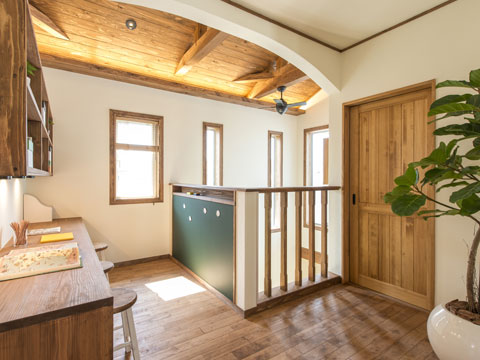
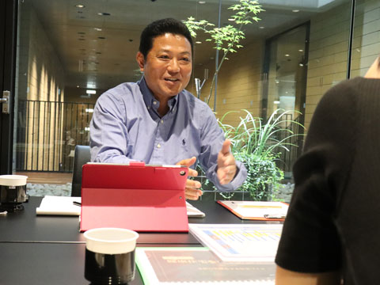
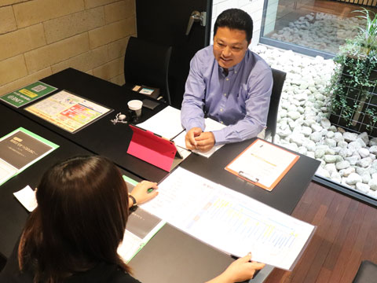
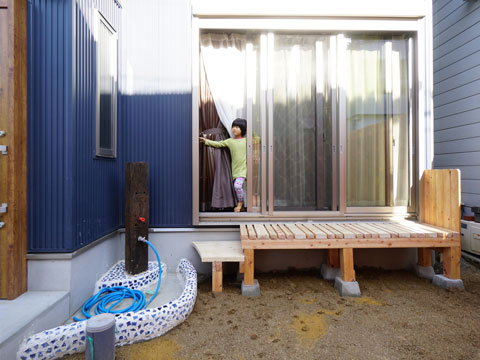
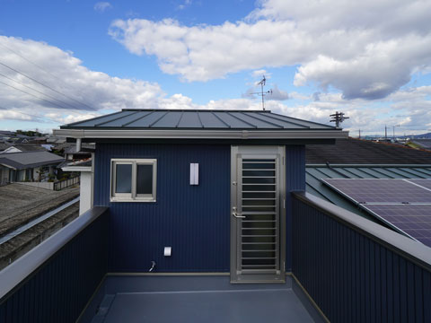

- ホーム
- 初めての方へ「ココロホームの家づくり」｜資金計画と土地探し
Funds資金計画の立て方が成功のポイント
家づくりにかかるお金、
よく考えてみましょう！

人生におけるもっとも高額な買い物は、実は家ではなく「住宅ローン」だということをご存じですか？ 注文住宅を購入する場合、ほとんどの方は住宅ローンを組んで家を建てます。この住宅ローンは、家を建てた後もずっと支払いが続くため最初に考えておく必要があるのです。
まずは家づくりに必要な費用を把握し、支払いには欠かせない住宅ローンの仕組みについても知っておきましょう。
家づくりにかかる費用

家の建築にはさまざまな費用がかかりますが、どんな費用があるのか知らずに家づくりをはじめてしまうと、予想外の出費に困惑することになるかもしれません。事前にどんな費用がかかるのか把握しておきましょう。
※表は左右にスクロールして確認することができます。
| 付帯工事費 | 別途工事費 | 借入関連 | その他費用 | 税金 |
|---|---|---|---|---|
|
|
|
|
|
住宅ローンの支払額

住宅ローンの組み方次第で、総額は大きく変わってきます。金利まで含めて計算しておかないと、あとあと後悔することになるかもしれません。たとえば、金利が1％変わるだけで、総額は大きく変わってくるのです。
※表は左右にスクロールして確認することができます。
| 金利 | 支払う期間 | 総額 | 差額 |
|---|---|---|---|
| 0% | 一括 | 30,000,000円 | 0円 |
| 3% | 35年 | 48,491,100円 | 18,491,100円 |
| 4% | 35年 | 55,789,440円 | 25,789,440円 |
家づくりで大切なのは、家族の将来を見据えて無理なく返済できる資金計画を立てることです。豊中市で注文住宅をつくるココロホームでは、「無理な住宅ローンは組まない、組ませない」という考えで、資金計画についても親身にアドバイスしています。
Funds生活に直結する「土地探し」の重要性
長年にわたってその土地に
住み続けることをイメージしましょう

家づくりは、家を建てたら終わりではありません。家づくりによって、その後の人生をいかに幸せに過ごせるかが大切だと私たちは考えています。長年にわたって住み続けることになる土地をどのように探すべきか、ポイントをご紹介します。
その土地で長年生きることを考える

家を建てる際には夫婦だけだったり、お子さまが小さかったりすることは多いと思います。そのため、子育てを意識して学校から近い土地を探す方も少なくありません。しかし、家で暮らす期間は数十年。子どもが独立したあとまで考えた土地探しが重要です。
「家づくり」は、生活の場をつくるだけではなく自分たちが土地に根付いていくことでもあります。数十年先のライフプランまでをしっかり見据えた土地選びが大切です。
優先すべき条件を考える
住まいの周辺の土地に求める条件は何ですか？ 会社や学校から近いことや買い物に便利なことなど、条件はいろいろあるかと思います。車での移動を考えると道路の近くが便利ですが、小さな子どもがいる場合は交通量が多い道路の近くは不安です。
まずは、家族の現在から将来までを見据えたうえで、土地の条件として何を優先するべきなのか洗い出してみましょう。